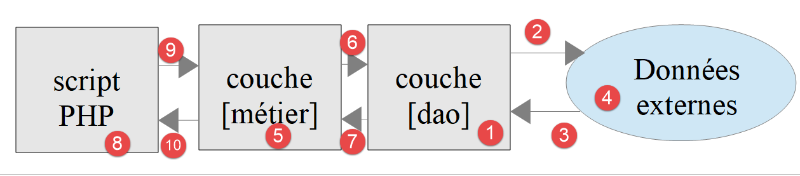

10. Applications en couches
10.1. Introduction

Nous allons découvrir maintenant comment structurer une application PHP en couches :

Dans ce schéma, c’est la couche de gauche qui prend l’initiative d’utiliser la couche de droite. Le rôle des couches est le suivant :
- [1] : la couche appelée [dao] (Data Access Objects) s'occupe des échanges avec des entrepôts de données externes [4] (fichiers, bases de données, services web…). Cette couche est parfois appelée [DAL] (Data Access Layer) un terme qui décrit mieux le rôle de la couche. Cette couche peut lire des données [3] ou en écrire [2]. Elle est sollicitée par la couche [métier] [6] et lui rend des résultats [7] ;
- [5] :une couche appelée [métier] qui rassemble des procédures ‘métier’ à qui on fournit toutes les données dont elles ont besoin. C’est généralement la couche la plus stable d’un projet car elle ne dépend pas de la façon dont les données sont acquises. Celles-ci ont deux sources :
- [9] : les données fournies par le script PHP ;
- [6,7] : les données demandées à la couche [dao].
- [8] : le script principal est le chef d’orchestre. Dans une application console, il va :
- créer les couches [métier] et [dao] ;
- dérouler l’algorithme de l’application. Cet algorithme est celui d’un chef d’orchestre : on n’y trouve aucun code ‘métier’ ou d’accès aux données. Le script principal se contente d’appeler les procédures de la couche [métier] [9]. Il ignore totalement la couche [dao] et les données externes. Il peut fournir à la couche [métier] des données [9]. Dans une application console, celles-ci peuvent provenir de fichiers de configuration ou de l’utilisateur du script. Il reçoit des résultats [10] de la couche [métier]. Il peut avoir besoin de stocker certains résultats : pour cela il utilise de nouveau les procédures de la couche [métier] qui elles vont s’adresser à la couche [dao] qui va faire le travail ;
- parmi les résultats, le script principal peut recevoir des exceptions. C’est son rôle de gérer les exceptions qui remontent de toutes les couches ;
Ce découpage en couches est destiné à faciliter l’évolution de l’application. Pour cela, chaque couche implémente une interface. Supposons que :
- la couche [dao] est implémentée par une classe [Dao] qui implémente une interface [IDao] ;
- la couche [métier] est implémentée par une classe [Métier] qui implémente une interface [IMétier] ;
Les procédures de la couche [métier] vont alors utiliser l’interface [IDao] plutôt que la classe [Dao]. Ceci permet de faire évoluer la couche [Dao] sans toucher à la couche [Métier]. Supposons que dans une version 1, la couche [Dao1] utilise des données d’une base de données. Suite à une évolution, ces données sont maintenant fournies par un service web dans une version 2, [Dao2]. On s’assurera que les deux classes [Dao1] et [Dao2] implémentent la même interface [IDao] et qu’elles lancent les mêmes exceptions. Si ceci est vérifié, la couche [Métier] qui travaille avec l’interface [IDao] restera inchangée ;
Le même raisonnement s’applique à la couche [Métier].
Voyons une implémentation avec des classes et interfaces :

L’application va implémenter la structure en couches suivante :

10.2. Objets échangés entre couches
En temps normal, les couches échangent divers objets. Ici elles échangeront la classe suivante [Personne.php] :
<?php
// une personne
class Personne {
// identifiant
private $id;
// constructeur
public function __construct(int $id) {
$this->id = $id;
}
// toString
public function __toString(): string {
return "[Personne($this->id)]";
}
}
Commentaires
- ligne 6 : la personne n’a qu’un attribut, son identifiant [$id]. On va supposer que celui-ci désigne une personne unique dans un entrepôt de données ;
- lignes 9-11 : le constructeur qui permet de construire un type [Personne] avec son identifiant ;
- lignes 14-16 : la méthode [__toString] qui affiche l’identifiant de la personne ;
10.3. Couche [dao]
L’interface [IDao] implémentée par la couche [dao, 1] est la suivante [IDao.php] :
<?php
// couche [dao] ------------------------
interface IDao {
// récupération d'une personne dans un entrepôt externe
// on passe l'identifiant de la personne
public function get(int $id): Personne;
// sauvegarde d'une personne dans un entrepôt externe
public function save(Personne $p): void;
}
Cette interface est implémentée par la classe [Dao1] suivante [Dao1.php] :
<?php
class Dao1 implements IDao {
// sauvegarde d'une personne dans un entrepôt externe
public function save(Personne $p): void {
print "[Dao1] : Sauvegarde de la personne $p en base de données [locale]\n";
}
// récupération d'une personne dans un entrepôt externe
public function get(int $id): Personne {
print "[Dao1] : Récupération de la personne d'identité ($id) en base de données [locale]\n";
return new Personne($id);
}
}
Commentaires
- la classe n’interagit pas avec un entrepôt de données. On se contente d’afficher des messages pour suivre le déroulement du code (lignes 7 et 12) ;
- ligne 13 : on rend bien une personne ayant l’identifiant passé en paramètre à la méthode (ligne 11) ;
Nous implémentons également l’interface [IDao] avec la classe [Dao2] suivante [Dao2.php] :
<?php
class Dao2 implements IDao {
// sauvegarde d'une personne dans un entrepôt externe
public function save(Personne $p): void {
print "[Dao2] : Sauvegarde de la personne $p en base de données [distante]\n";
}
// récupération d'une personne dans un entrepôt externe
public function get(int $id): Personne {
print "[Dao2] : Récupération de la personne d'identité ($id) en base de données [distante]\n";
return new Personne($id);
}
}
La classe [Dao2] est similaire à la classe [Dao1] si ce n’est que nous avons modifié les messages affichés.
10.4. Couche [métier]
La couche [métier, 2] offre l’interface [IMétier] suivante [IMetier.php] :
<?php
// couche [métier] ------------------------
interface IMétier extends IDao {
// on exploite une personne identifiée par son id
public function doSomething(Personne $p): void;
}
Commentaires
- l’interface [IMétier] étend l’interface [IDao]. Ce n’est pas du tout obligatoire. On le fait ici parce que l’exemple est simple ;
- ligne 7 : la méthode [doSomething] est propre à la couche [Métier] ;
L’interface [IMétier] sera implémentée par la classe [Métier] suivante [Métier.php] :
<?php
class Métier implements IMétier {
// couche [dao]
private $dao;
// getter / setter
public function setDao(IDao $dao): void {
$this->dao = $dao;
}
public function getDao(): IDao {
return $this->dao;
}
// on exploite une personne
public function doSomething(Personne $p): void {
// traitement
print "Métier : Traitement métier de la personne $p\n";
}
// sauvegarde de la personne
public function save(Personne $p): void {
print "[Métier] : Sauvegarde de la personne $p\n";
// on demande à la couche [dao] de faire la sauvegarde
$this->dao->save($p);
}
public function get(int $id): Personne {
print "[Métier] : récupération de la personne d'identifiant $id\n";
// on demande la personne à la couche [dao]
$personne = $this->dao->get($id);
return $personne;
}
}
Commentaires
- ligne 5 : la couche [métier] doit avoir une référence sur la couche [dao] pour pouvoir utiliser les méthodes de celle-ci ;
- lignes 8-10 : la méthode [setDao] permet de donner à la couche [métier] la référence de la couche [dao]. On notera que le type du paramètre est [IDao]. Ainsi la couche [métier] va être capable de travailler avec toute classe implémentant l’interface [IDao]. Si on passe d’une couche [Dao1] à une couche [Dao2] et que toutes deux implémentent l’interface [IDao], la couche [métier] n’a pas à être réécrite ;
- lignes 17-20 : implémentation de [IMetier::doSomething] ;
- lignes 23-27 : implémentation de [IMetier::save]. Cette méthode doit sauvegarder une personne dans un entrepôt de données. La couche [métier] ne sait pas faire ça. Elle s’adresse à la couche [dao] pour faire cette sauvegarde ;
- lignes 29-34 : implémentation de [IMetier::get]. Cette méthode doit récupérer dans un entrepôt de données la personne dont l’identifiant lui est passé en paramètre. La couche [métier] ne sait pas faire ça. Elle s’adresse à la couche [dao] pour faire le travail (ligne 32) ;
Conclusion
Dès que la couche [métier] a besoin d’accéder aux données stockées dans l’entrepôt de données, elle doit passer par la couche [dao] qui a été créée pour accéder à ces données.
10.5. Script principal
Nous allons écrire deux scripts, chefs d’orchestre pour cette application. Le 1er [main1.php] utilisera la couche [Dao1] alors que le second [main2.php] utilisera la couche [Dao2]. Nous voulons montrer que cela n’a aucune incidence sur le code de la couche [Métier].
Le script [main1.php] est le suivant :
<?php
// respect strict des paramètres des fonctions
declare (strict_types=1);
// inclusion classes et interfaces
require_once __DIR__."/Personne.php";
require_once __DIR__."/IDao.php";
require_once __DIR__."/IMetier.php";
require_once __DIR__."/Dao1.php";
require_once __DIR__."/Métier.php";
// test ----------------
// création des couches
$dao1 = new Dao1();
$métier = new Métier();
$métier->setDao($dao1);
// utilisation de la couche [métier]
$personne = $métier->get(4);
$métier->doSomething($personne);
$métier->save($personne);
Commentaires
- rappelons quelques points : le script [main1.php] est le chef d’orchestre de l’application. Il crée la structure en couches de l’application (lignes 15-17) puis ensuite commence à dialoguer avec la couche [métier] (lignes 19-21). La structure en couches est en effet la suivante :
Selon ce schéma, le script [main1.php] ne doit s’adresser qu’à la couche [métier]. Elle ne doit pas s’adresser à la couche [dao] même si c’est théoriquement possible.
Les résultats de l’exécution sont les suivants :
[Métier] : récupération de la personne d'identifiant 4
[Dao1] : Récupération de la personne d'identité (4) en base de données [locale]
[Métier] : Traitement métier de la personne [Personne(4)]
[Métier] : Sauvegarde de la personne [Personne(4)]
[Dao1] : Sauvegarde de la personne [Personne(4)] en base de données [locale]
Commentaires
- la ligne 10 du code a provoqué l’écriture des lignes 1 et 2 des résultats ;
- la ligne 20 du code a provoqué l’écriture de la ligne 3 des résultats ;
- la ligne 21 du code a provoqué l’écriture des lignes 4 et 5 des résultats ;
Le script [main2.php] est le suivant :
<?php
// respect strict des paramètres des fonctions
declare (strict_types=1);
// inclusion classes et interfaces
require_once __DIR__."/Personne.php";
require_once __DIR__."/IDao.php";
require_once __DIR__."/IMetier.php";
require_once __DIR__."/Dao2.php";
require_once __DIR__."/Métier.php";
// test ----------------
// création des couches
$dao2 = new Dao2();
$métier = new Métier();
$métier->setDao($dao2);
// utilisation de la couche [métier]
$personne = $métier->get(4);
$métier->doSomething($personne);
$métier->save($personne);
Commentaires
- lignes 36-38 : la structure en couches utilise désormais la couche [Dao2] ;
Les résultats de l’exécution sont les suivants :
[Métier] : récupération de la personne d'identifiant 4
[Dao2] : Récupération de la personne d'identité (4) en base de données [distante]
[Métier] : Traitement métier de la personne [Personne(4)]
[Métier] : Sauvegarde de la personne [Personne(4)]
[Dao2] : Sauvegarde de la personne [Personne(4)] en base de données [distante]
La couche [Dao1] simule un accès à une base de données locale alors que la couche [Dao2] simule un accès à une base de données distante. Tant que ces deux couches respectent l’interface [IDao], on voit que le code de la couche [Métier] n’a pas eu à être changé.
Nous allons appliquer ce que nous venons d’apprendre à l’exercice du calcul d’impôts qui nous sert de fil rouge.